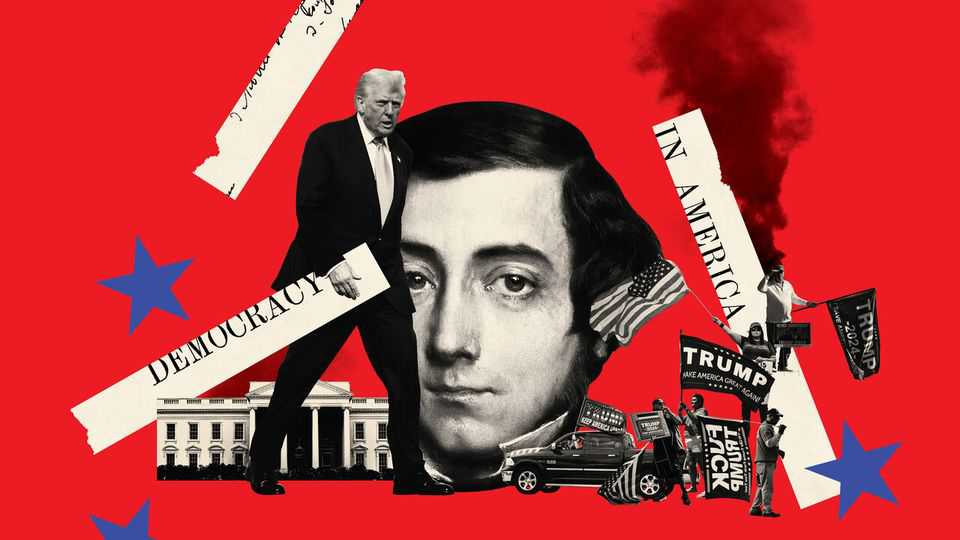

Tik-Tocqueville
Why “Democracy in America” is worth going back to on the country’s 250th birthday
June 11th 2026

It’s hard to know how to mark a milestone birthday, especially for the rich and powerful. A fancy dinner, or perhaps a trip? As America approaches 250, friends and admirers at home and abroad worry that it has lost its shimmer. The last time a majority of Americans thought their country was on the right track was a generation ago. For those keen to celebrate America’s birthday but wary of overdoing it, this newspaper recommends something more cerebral than a cage fight on the lawn: reading Alexis de Tocqueville.
Why him? A young French aristocrat who visited the country just once in the 1830s, Tocqueville was an unlikely prophet. He went travelling partly to escape his parents, who disapproved of his girlfriend and his liberal politics. But his nine-month trip across 17 of the then 24 states filled 14 notebooks and produced “Democracy in America”, one of the best books about democracy, or America.
Its two volumes, written five years apart, mix political science, sociology, journalism and prediction. It is long, occasionally turgid and also funny. It is not universally loved: Walter Isaacson reckons it is the least-read and most quoted book about America. Reading it cover to cover is indeed a slog. It is better dipped into, like Montaigne’s “Essays” or a recipe book.
The recipes it contains describe how to mix equality, prosperity, law, religion and democracy in the right proportions to make freedom. If the Federalist Papers laid out how it started, “Democracy in America” explains how it is going. When Tocqueville wrote the book, the country was two generations from the founding and two away from its reckoning with slavery. Success seemed likely but was still not guaranteed. When he arrived in New York in May 1831, embarking on a nine-month tour on a fact-finding mission for the French government to study America’s prisons, the city had a population of 200,000 crammed into a few blocks in lower Manhattan. Paris was four times the size. To make the case to Europeans that America was not some odd experiment, but a model for the rest of the world, took foresight.
That America should turn out well is no surprise to a reader in 2026, so why return to the book now? One reason is for the moments of recognition. Take this one, familiar to any visitor who has ever flopped on a hotel bed after a long flight to America and flicked on cable news. “To a stranger,” he writes in book one, “all the domestic controversies of the Americans at first appear to be incomprehensible or puerile, and he is at a loss whether to pity a people who take such arrant trifles in good earnest, or to envy that happiness which enables a community to discuss them.”
Or this observation, on presidential elections: “As the election draws near, the activity of intrigue and the agitation of the populace increase; the citizens are divided into hostile camps [...] the whole nation glows with feverish excitement; the election is the daily theme of the press, the subject of private conversation, the end of every thought and action, the sole interest of the present.” Then, as soon as it’s over, “this ardour is dispelled, calm returns, and the river, which had nearly broken its banks, sinks to its usual level; but who can refrain from astonishment that such a storm should have arisen?” Your correspondent, who is also a foreigner, has covered three presidential elections for The Economist. This remains the best description of what they are like. It also captures Tocqueville’s fundamental view about American democracy: that the chaos on the surface of public life disguises a profound stability beneath.
Like other visitors from godless Europe, Tocqueville was struck by how religious the country was. “From time to time strange sects arise which endeavour to strike out extraordinary paths to happiness,” he writes. “Religious insanity is very common in the United States.” Later sociologists would argue that the greater vitality of religion in America could be explained by competitive pressure. There was no religious monopoly in the competition for souls, so any church that stopped hustling would decline.
That was one more manifestation of Americans’ ubiquitous, manic energy. “In the United States,” Toqueville writes, “a man builds a house in which to spend his old age, and he sells it before the roof is on.” Rather than enjoy what they had, Americans were “restless in the midst of abundance”. You could even see it in how they holidayed. If an American finds himself with a few days off at the end of a year of hard work, “his eager curiosity whirls him over the vast extent of the United States, and he will travel 1,500 miles in a few days to shake off his unhappiness.” Recall that this was written by someone who had never seen an airport just before Thanksgiving. Some of this restless energy was directed towards politics. But mostly it was spent on commerce and the acquisition of stuff.
Yet rather than sneer at these qualities—the love of commerce, the religious fanaticism, the restlessness—as other snooty travellers have done before and since, Tocqueville thought that Americans’ strange passions were part of what made their democracy work. Religion provided a moral anchor, which was even more necessary in a society that changed so fast. A focus on business taught Americans patience, flexibility and a willingness to compromise, all qualities which were defences against the kind of revolution France had suffered (and which had almost separated Tocqueville père’s et mère’s heads from their shoulders with a steel blade).
One of the best passages of the book describes the contrast between the two banks of the Ohio river. On one side was a slave state (Kentucky) while the other side was free (Ohio). In Kentucky, society seemed to be asleep. Ohio, across the water, was humming. On one bank work meant slavery, on the other it meant prosperity and improvement: “on the one side it is degraded; on the other side it is honoured.” Tocqueville was a racial pessimist: he thought black and white Americans would never live alongside each other in conditions of real equality.
Such snippets are reason enough to read “Democracy in America” at any time. But the book has extra resonance now because of the echoes of the 1830s in the Trump era. Andrew Jackson was president when Tocqueville was in America, and they met in the White House. The visitor was unimpressed. Jackson was “a man of violent temper and very moderate talents; nothing in his whole career ever proved him qualified to govern a free people; and, indeed, the majority of the enlightened classes of the Union has always opposed him.” Donald Trump has had similar things said about him by emissaries of foreign governments, though they are usually too afraid of retribution to print them.

Mr Trump’s first election sparked a mini boom in Jackson studies, after he moved a portrait of the seventh president into the Oval Office. Jackson governed as a populist. His supporters were frontiersmen, farmers and slaveholders. Some of them broke into the White House after his first inauguration and smashed the place up. They were persuaded to leave only by a large quantity of free booze on the lawn outside. Much like Mr Trump, Jackson still horrifies the enlightened classes: he was vicious towards Native Americans and was himself both a slave owner and a defender of slavery. For the current president, putting Jackson’s portrait by his desk was a sign that in his America nobody has to apologise for the past, apart from people who apologise for the past.
Tocqueville thought Jackson was ghastly. But he was struck that he could address even the head of state as plain Mr Jackson (that has changed). This part of Jacksonian populism he approved of. Tocqueville himself was a count who did not like his title and did not use it. American informality was significant, as important as the constitution or the courts for what it revealed about democratic society. For when Tocqueville writes about democracy, he does not only have in mind the business of choosing lawmakers–the yard signs, attack ads and fundraising emails we think of today. He means democracy as a way of relating to one another.
America, he reckoned, was a social experiment as much as a political one. Pre-revolutionary France had been a society of formal gradations: in addition to their titles, aristocrats wore different clothes, ate different food, had different leisure pursuits, were even treated differently by the law. In America all this was swept away, replaced by “equality of conditions”. That did not mean, as socialists would later dream, that everyone was equally rich. It meant that nobody was deemed superior.
Signs of this equality were everywhere. Even the way parents and children spoke to one another was different from Europe. Sons were less fearful of their fathers, and the fathers did not behave like oracles or dictators. When children reached maturity, their independence was an “incontestable right”. Each generation started afresh, and inheritance laws prevented the accrual of vast fortunes. The goal of an aristocrat was to keep their children’s children from ever having to work. An American parent’s job, by contrast, was to bring their children to a point where they could feed and clothe themselves, then let go. Young American women were freer than European ones. They could travel without chaperones; they could be “consummate flirts” before marriage. That was equality, too.
Tocqueville’s book is not all boosterish. Running through it is a very French taste for paradox. Everything contains its opposite. Democracy, like any other system, could undo itself. Because he was such an enthusiast for America, and for self-government, his warnings carry more weight.
John Sturart Mill, the greatest British liberal of the era, raved about “Democracy in America”. He called it “the first philosophical book ever written on democracy”. But he thought Tocqueville too pessimistic on some points. Mill imagined that in a democracy, the wisest men would lead society. Tocqueville thought that demo-cracy did not work like that. People like Jackson would lead, because in a democracy popular opinion is sovereign, and because democracies tended towards mediocrity in government. The most talented people would be too occupied with commerce to concern themselves with politics. As for the idea that public opinion would be formed by brilliant writers and thinkers, the inverse was more likely. America’s equivalent of Mill would follow public opinion, not lead it.
In America, he wrote, “the majority raises very formidable barriers to the liberty of opinion: within these barriers an author may write whatever he pleases, but he will repent it if he ever step beyond them.” That is no longer a good description of how America argues. Hardly any question seems settled. But it does capture how social media work, with their separate worlds of information within which people do not just silence debate, they do not even ask what is worth debating.
He also feared democratic unravelling. Usually so fluent, Tocqueville struggled to define what to call this. Words like “tyranny” and “despotism” belonged to a different age. He could not think of a term, so instead he described it. Democratic oppression, he wrote, would be “unlike anything that ever before existed in the world”. An equal, democratic society made up of people pursuing their own happiness could become so atomised that citizens would give up on politics, withdraw, leave it to someone else. Above these people would stand “an immense and tutelary power, which takes upon itself alone to secure their gratifications, and to watch over their fate”. This power would seek to keep people “in perpetual childhood”.
After this one trip, Tocqueville never returned to America. He had seen enough to explain to people back home that he had seen the future. Like it or not, there was no going back to how things used to be. He was right about that as well. ■
Stay on top of American politics with The US in brief, our daily newsletter with fast analysis of the most important political news, and Checks and Balance, a weekly note that examines the state of American democracy and the issues that matter to voters.